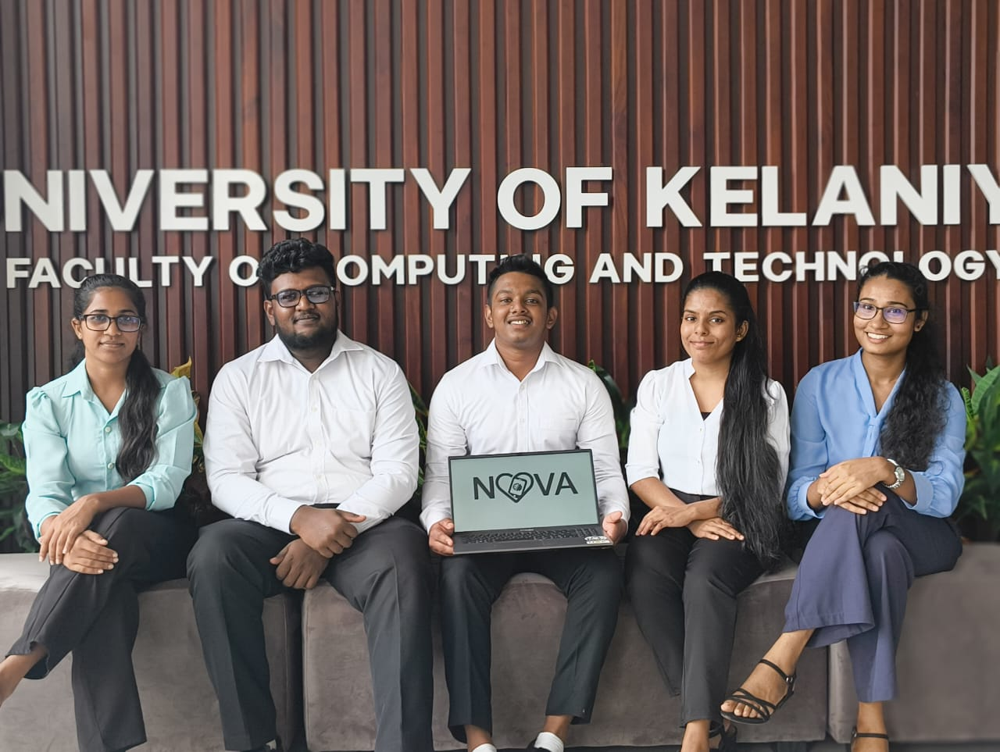
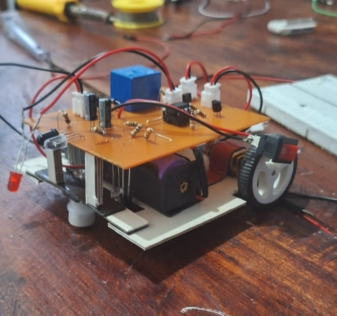
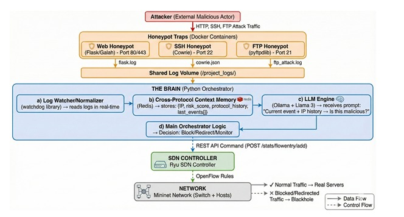
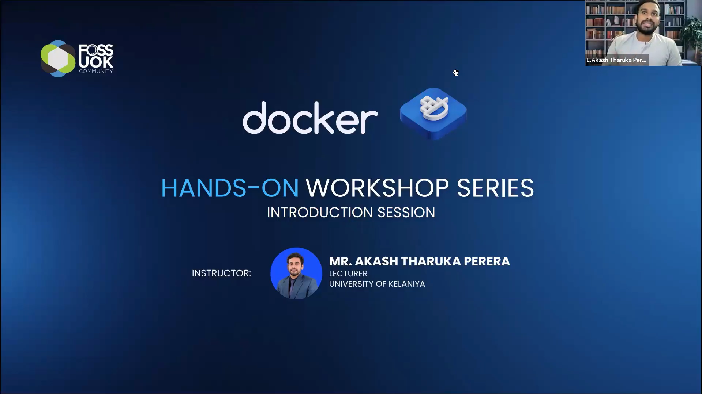
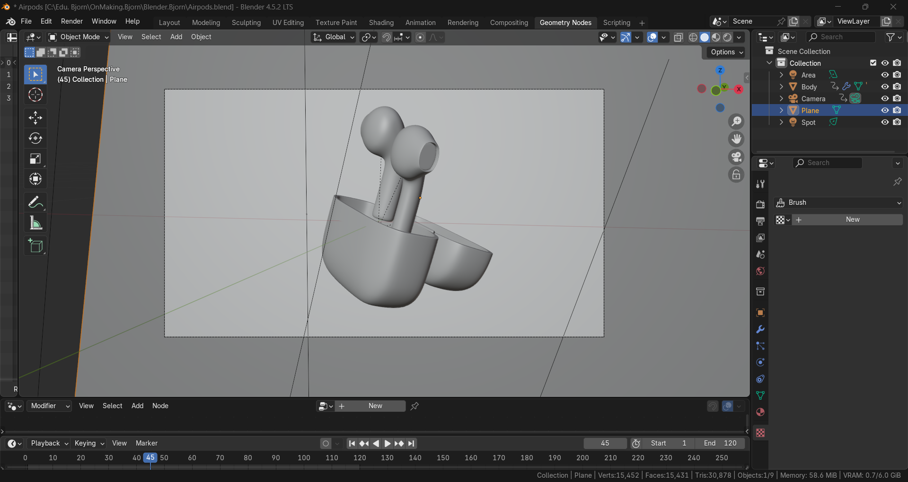
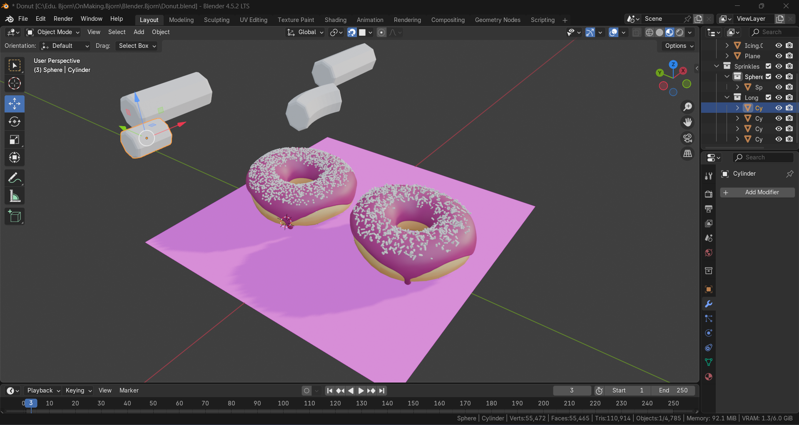
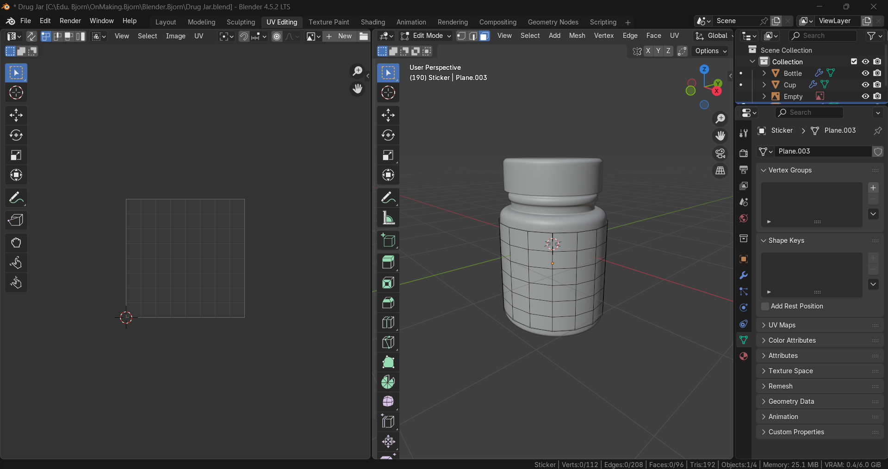

Yasiru Randima Sankalpa
CT/2022/054 | Reading BICT(Honours) | Faculty of Computing & Technology | University of Kelaniya
I'm Yasiru Randima Sankalpa, a 2nd year Undergraduate of Unviersity of Kelaniya. I'm passionate about gaming and 2D/3D animations.
So far I have created some 3D Rigs and simple animations as a beginner animator including the famouse beginner "Donut tutorial" and for an animation I hace designed the bouncing ball in MAYA. And also I do videography and Photography as a pleasure time activity which gives me more freedom,new POVs and it's help me to understand how the compositions, lightinings and colours work inside the digital enviornment.
My goal is to become a professional game developer and a 3D animator in my industry.In these days I follow some tutorials to get deep understanding about camera movements and lightning for any type of animations. I'm excited to keep learning about what I like most and turning my imaginary into real experiences:)
► START MISSION
⚡ ABOUT ME
🎓 Educational Background:
Currently I'm Reading BICT(Honours) at Faculty of Computing & Technology – University of Kelaniya.
And I completed G.C.E O/Ls at Royal College, Horana & A/Ls at Taxila Central College, Horana
under the Technology Stream Because I was interested in ICT.
And that time I completed some basic GIT courses conducted by some Private Institutes.
⚙️ Interests:
I'm passionate about gaming, 2D/3D animations,video & Photography.
I like watching animated movies and how they create these motions in a virtual enviornment.
🎯 Career Goals:
As Short term goals I hope to Improve my animate skills, and complete some small animation cartoons and I hope to participate some competitions as well.
Further more I want to study more about Game Designing and become a proffesional Game Developer and Animator as my Long term Goals.
💎 Values:
I Like to turn my imagination into a animations & I enjoy storytelling through my animations.
I enjoy working with my friends on projects.
As a interesting point I believe in learning by doing and nerver giving up when something is hard.
🕹️ ACADEMIC PROJECTS
📱 NOVA – Anonymous Mental Health App
As part of the Projects in Technology [I] module at the University of Kelaniya, my teammates and I designed a digital solution addressing:
“the lack of accessible and anonymous mental health support in Sri Lanka.”
Currently, the main support line — 1926 — is often overloaded, and many young people hesitate to speak openly due to stigma or fear of judgment.
Nova Features:
- Starts with the DASS-21 assessment to help users understand their current mental health status (stress, anxiety, and depression levels).
- Based on results, recommands activities and support tools tailored to the user’s condition.
- Provides an anonymous peer group chat for shared experiences.
- Includes an AI-based chatbot for emotional support, available 24/7.
- Offers guided self-help tools, offline meditation videos, and journaling features.
- Displays real-life success stories to inspire and reduce stigma.
- Includes a prominent emergency support button for immediate help.
We used Figma to design a clean and user-friendly interface, focusing on accessibility and comfort for people who may be feeling overwhelmed or anxious.

🚗 Transistor‑Based Line Following Robot
For the Fundamental of electronics Module, we had an analog electronics challenge:
“build a line follower using only transistors, comparators, and passive components – no microcontrollers, no off‑the‑shelf sensor or motor driver modules.”
Unlike typical Arduino‑based designs, this robot relies purely on analog signal processing and discrete logic – a true test of circuit fundamentals.
Specs of the Robot:
- Follows a 2cm black line (straight and curved) on white background.
- Stops and turns on a red LED when an obstacle is detected in front.
- Battery powered (3×AA cells), with a clearly labeled on‑off switch.
- Works reliably under any lighting – no special lighting provided.
- Detachable PCB – overall size 10×10×10 cm, weight 1kg.
- Total component cost under Rs. 5000 for the whole group.
Outcome:
- The robot successfully completed a test track with 90° turns and S‑curves.
- Obstacle detection worked at 5cm distance.
- Our PCB was evaluated separately and scored high for clean soldering and compact layout.
- The demonstration received positive feedback from the academic coordinator.

🛡️ LLM-Augmented Honeypot Orchestration
[Ongoing]
As part of Projects in Technology [II] ,
our team currently developing a security prototype targeting a critical weakness:
“isolated honeypots that cannot correlate attacks across different services or respond without human intervention.”
Core limitations addressed:
- No memory across protocols – SSH, web, FTP logs stay separate.
- Zero automation – every alert waits for a human analyst.
- No intelligence sharing – a pattern on one service does not protect others.
- Rigid rule sets – cannot interpret multi‑step attack chains.
Our solution:
- Shared attack memory (Redis) – cross‑protocol event storage.
- Semantic threat assessment – local LLM infers coordinated attacks.
- Instant network enforcement (Ryu SDN) – blocks malicious IPs in 2 seconds.
- Built on open tools – Cowrie, Ryu, Ollama, Redis; innovation is the orchestration layer.

🎮 SKILL TREE
▸ LANGUAGES
▸ TOOLS & TECH
▸ HARDWARE
👾 CLUBS & LEADERSHIP
🐢 Turtle Rescue Project
Joined a one‑day turtle rescue project organized by Rotaract club, University of Kelaniya. And Helped to rescue new born sea turtles and relase them to the sea. Also listened to a short awareness session about turle's marine life.
📡 RESEARCH ENGAGEMENT
Student Research Symposium 2025
Organized by Faculty of Computing & Technology,University of Kelaniya.
Attended as a participant. I have watched our seniors present projects on various paths.
And learned how to done a research project step by step by participating for the event.
📜 CERTIFICATIONS
🐧 Netcad Linux Essentials
I have Completed the Linux Essentials course covering: file system navigation, user permissions, shell scripting basics, process management, and network configuration.
And that course covered:
🐳 Docker Workshop (Ongoing)
Currently I'm attending a hands‑on Docker workshop conducted by FOSS Community University of Kelaniya.
So far, I have Learned containerisation basics:
- Containers
- docker files
- docker-images
- docker-compose
And I'm willing to learn more about docker and receive a participation certificate after completion.

🏆PERSONAL ACHIEVEMENTS
🎨3D character rigs
(Blender – self learning)
I followed Blender animation tutorials. And I modeled simple Rigs.So,I learned some tools like subdivision surface, geometry nodes, shading and basic rendering teqniques. These are my first 3D models designed using blender.



💭 REFLECTIONS
🤖 Line-following Robot
As I said before, I really enjoy working in a team with my friends. While developing our robot, we had many different ideas about which type of elements we should use for the robots. We had a few disagreements, but at the end we learned to respect each other's opinions and vote on decisions.
And also dividing tasks made everything much easier.That's one of my learns from my group activities.
We also faced various obstacles – some times it wroks ,some times it is not.In those situation we take some time and we restarted the process until it works. That taught me
Through this project, I improved my soft skills – listening to feedback, explaining my choices calmly, and encouraging teammates when they felt stuck.
🕸️ SDN Based Honeypot(Ongoing)
This project is special for me. Because it's my first time working with LLM and network based devices. When we started this project, I had no idea what ryu,cowrie was. I spent more time following some tutorials and research papers to understand basic terms in networking.
So every step gave us headaches, but we didn't gave up we still wroking on our project with same energy. I learned to use Linux terminal, which I haven't use before. Even though the project isn't finished, But I feel confident working with those security tools.
🎥 Photography & Animation
I enjoy taking photos and editing in my free time. I feel that, How to arrange lightning,compositions and colours into a single frame. These same skills I need for Game developing & Animations. When I record some movements in my surround. I understand how movement works.
It teach me to make animation looks realstic.Further more I like to learn more about compositions and techniques in photography & videography as well.
🚀 FUTURE ROADMAP
Short‑term (6-12 months)
- Complete the Docker workshop conducted by FOSS community and get the certificate.
- Complete our ongoing LLM‑augmented honeypot project and try to release a research paper.
- Create a 1min 3D animation in Blender (behaviours of enviornment)
- Participate in online game jam or animation competitions.
Long‑term (1-3years)
- Learn Unreal Engine and build a some 2D mini games.
- Do some external courses on character rigging and advanced animations.
- Learn more coding that combine with game logics.
- Explore how AI can help for my work in game development & Animations.
Skills to master
- I want to master every Blender skills in my future.
- Explore more game engines and learn each one.
- Create animations in various categories.
- Learn more texturing and Character designs for animations.
📡 CONTACT INFO
✉ yasirufernan23@gmail.com